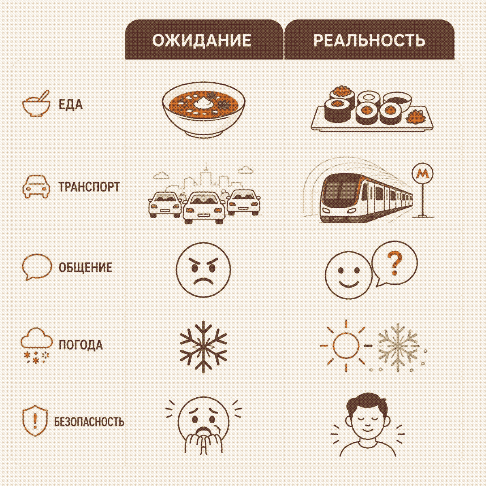
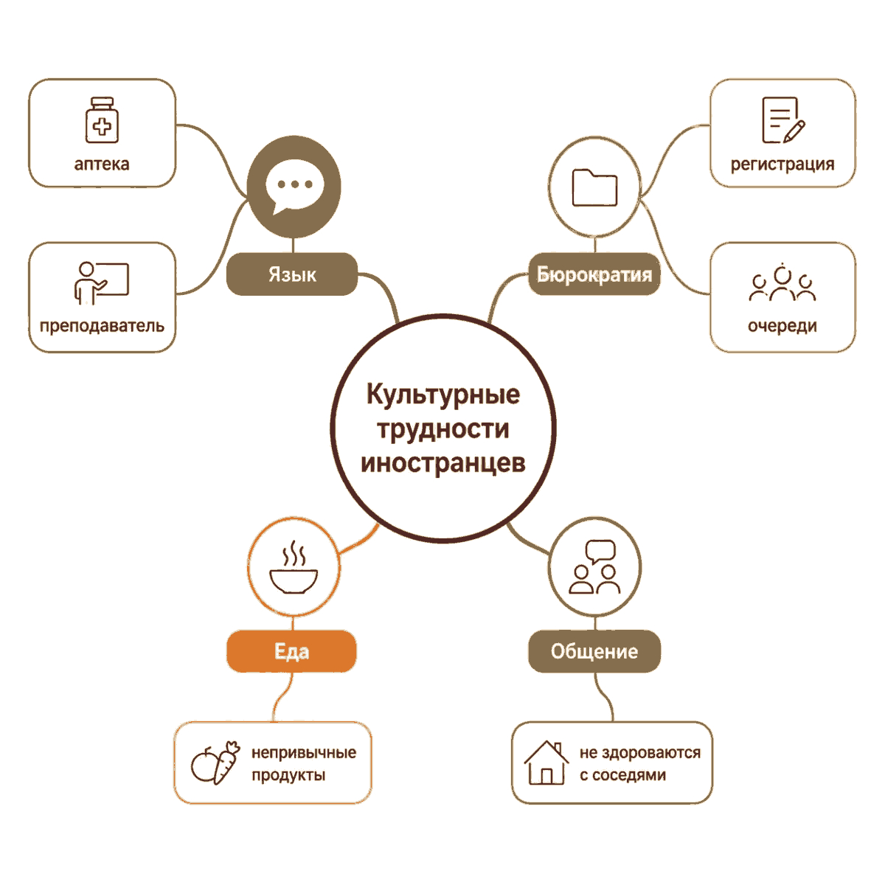

Зачем этот проект
Иностранные студенты приезжают с образом России из фильмов, игр и новостей. Реальная жизнь в Тюмени часто другая. Узнать правду из первых уст - значит снизить стресс адаптации и помочь университету строить поддержку осознанно.
Защитный проект · 2025–2026
Мы исследуем разрыв между ожиданиями и реальностью - чтобы будущие студенты приезжали подготовленными, а университет лучше понимал их адаптацию.
Иностранные студенты приезжают с образом России из фильмов, игр и новостей. Реальная жизнь в Тюмени часто другая. Узнать правду из первых уст - значит снизить стресс адаптации и помочь университету строить поддержку осознанно.
Разрыв между ожиданиями и опытом влияет на учёбу, общение и чувство безопасности. Неадаптированный студент теряет мотивацию; вуз теряет потенциал. Наш проект фиксирует этот разрыв в цифрах, историях и визуальных продуктах.
Школа метапредметных компетенций
Благодарим за методическую поддержку и площадку для презентации результатов.
Мы сравнили ожидания иностранных студентов с их реальным опытом по пяти параметрам.

Поместите файл sfmkC3.jpeg в папку images/
Показывает, с чем реально сталкиваются иностранцы при адаптации - не по стереотипам из интернета, а по нашим интервью.

Поместите IMG_3489.jpeg в папку images/
Интервью с иностранными студентами - на нашем канале Rutube.
Цифры и факты из паспорта проекта.
Исследование показало: главный ресурс адаптации - живое общение и честные ожидания. Продукты проекта (сайт, карта, видео) помогают будущим студентам готовиться заранее, а университету - видеть реальные точки культурного напряжения, а не мифы из соцсетей.
Обобщённые рекомендации для иностранных студентов в России.
Выучите «спасибо», «помогите, пожалуйста», «сколько стоит» - это открывает двери в магазине, вузе и транспорте.
Покупайте тёплую обувь на толстой подошве с протектором - гололёд в Тюмени реален.
В столовых снимают верхнюю одежду; дома часто не ходят в уличной обуви - это норма, не личная обида.
Ищите привычные специи в крупных сетях; местную кухню пробуйте постепенно - пельмени и блины обычно заходят всем.
Игры и западные медиа рисуют СССР и «ГУЛАГ» - лучше спросите однокурсников из России, как устроен ваш город.
Русские сначала серьёзны - потом очень дружелюбны. Инициируйте разговор сами: клубы, спорт, языковые пары.
Источники информации, изображений, литература и авторское право.